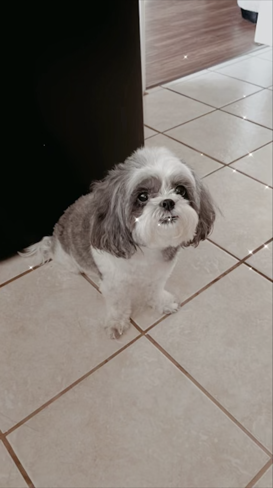
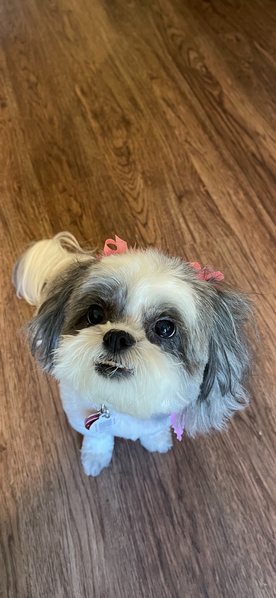
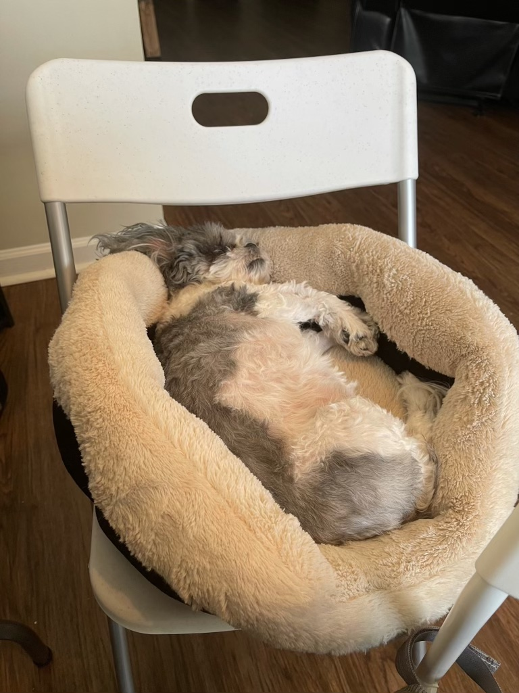

  

We feed her twice a day once in the morning and once in the night. I walk her everyday in the morning and when I come back from school. We don't really give her water as she has her own jug that fills itself everday. We refill the water jug once a week
Once I was locked out of my house and came home from school keep in mind I was in middle school and didn't really think about what I was about to do. Anyways one day I have forgotten my keys at home and none of my famiy members weren't at home and I was not gonna wait two hours for them so I remember we have a dog door in the backyard so I attempted to climb throught the dog door but while doing this I forgot to take my backpack off and my dog had heard me trying to come in. My dog is a loving dog who if she see's anyone she would want pets and hugs no matter what. So while I was attpemting to climb in she decided to try and go through the dog door while I was coming in and we both ended up stuck for about 45mins until I had started screaming for help and my neigbor had heard me and help me get unstuck. I was super embarrassed the neighbor was laughing at me and as soon as I was free I had told my neighor to keep this between us about this.